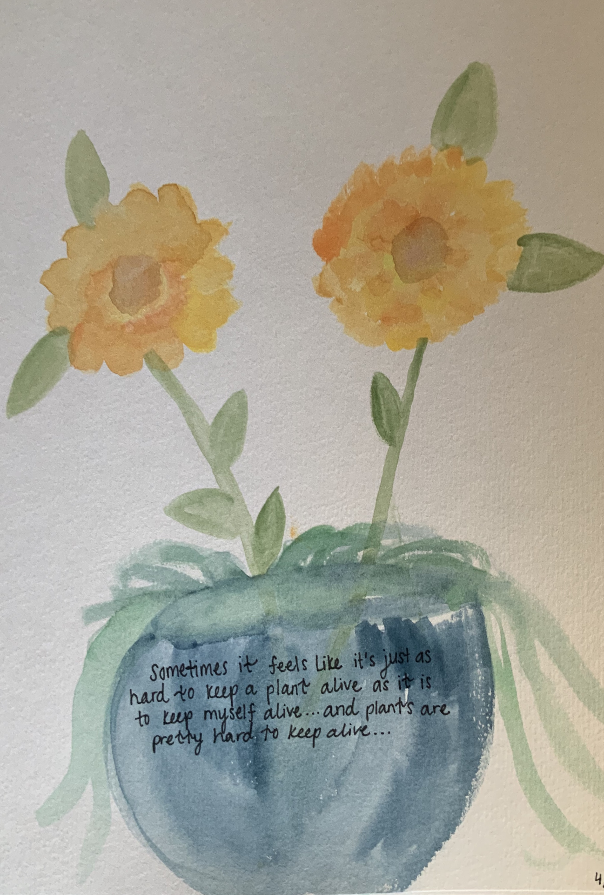

Space Octopus
I did not draw this. One of my stuednts, Grace, painted this for me! And I absolutely LOVE it!
And yes, my "artwork" is amatuer at best...but I like it, so it's fine.
I did not draw this. One of my stuednts, Grace, painted this for me! And I absolutely LOVE it!
These are some wildflowers I watercolored.
This is a random plant thing I watercolored. As you can tell, I like painting flowers.
The Lorax is my favorite. So I dree with with colored pencils.
This is a turtle that I watercolored.

This is a portrait of Tucker I did in acrylic. It's one of my personal favorites.

This is a monogram that I tried. I used watercolor for the background,and colored pencils for the letters.
This is a lotus Buddah thing I painted with acrylics.